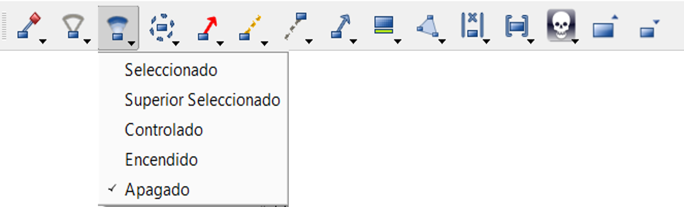

Manual Interactivo - Plataforma SWORD COBAS 48

Paso 1: Ingresar al servidor
Damos clic en el sistema SWORD para iniciar sesión.
Iniciar sesión en el servidor para acceder a la plataforma SWORD.
- Adaptar: Sirve para crear el modelo de las unidades
- Preparar: Nos proporciona el relieve al terreno
- Iniciar ejercicio: Es la visualización y desarrollo del juego
- Revisar: Supervisa las acciones de las fuerzas
Paso 2: Comenzar un ejercicio
Para iniciar un ejercicio, el usuario tiene que elegir un ejercicio y un perfil
En la aplicación frontend de SWORD, en el menú Jugar seleccione Iniciar
Seleccione un ejercicio y haga clic en Iniciar.
Seleccione el perfil a utilizar y Aceptar: Se abrirá la aplicación Juegos con el ejercicio seleccionado en la pantalla.
Paso 3: Unirse a ejercicio
Comienza el ejercicio para la simulación de las fuerzas.
Seleccionamos iniciar y damos clic en la pestaña Unirse.
Se despliega la pantalla para ingresar una dirección IP que nos dará acceso a la plataforma.
Esta IP es proporcionada por los monitores del sistema Mando y Control.
Se despliegan los diferentes perfiles y escogemos el perfil en el que vamos a trabajar.
Se despliega el mapa donde se encuentran las tropas.
Paso 4: Disposición pantalla
La herramienta de juegos está organizada como cualquier aplicación tradicional de Windows.
En la pantalla encontramos:
- Una barra de menú
- Varias barras de herramientas
- Mapa central
- Paneles acoplados
La configuración se puede guardar y restaurar
Paso 5: Manejo de unidades
Una vez iniciado el servidor se requieren las siguientes acciones para el manejo de unidades.
Podemos observar las capacidades que tendría la fuerza.
Se puede observar el disponible de las fuerzas.
Una vez verificadas las unidades de maniobra azul y rojo, procedemos a designar tareas y órdenes a las unidades.
Se despliegan diversas tareas que podrían ejecutar las unidades.
Una vez asignada la orden, designamos el objetivo y la ruta en la que va a moverse esa unidad.
Paso 6: Iconos de información 1
Iconos Parte 1.
Reloj: Muestra la hora que se vive en el ejercicio
Capacidad de combate: Muestra la capacidad que tiene la unidad seleccionada
Paso 7: Iconos de información 2
Iconos Parte 2.
Se da click en icono del alcance de las armas y se observa el radio en el mapa
Se da click en la pestaña ventanas y después en la opción línea de tiempo se nos porporciona las actividades diarias o semanales de las unidades
Paso 8: Terreno
Un Terreno SWORD se divide en 3 capas complementarias.
Un Terreno se divide en 3 capas complementarias: Una capa VECTORIAL que define el tipo de terreno en cada punto del mapa. Una capa de ELEVACIÓN que define el relieve del terreno Una capa RÁSTER, una imagen que no influye en la simulación pero que puede proporcionar información adicional a los controladores.
Mediante el menú Mostrar/preferencias, es posible personalizar: La transparencia de las diferentes capas y escalas Colores y formatos, etc. Si mostrar o no un renderizado vectorial personalizado (mapnik)
Paso 9: Herramientas 1
Parte 1 Herramientas de visualización de unidades.
Modo 2D y 3D El modo 3D requiere que exista al menos una capa ráster
Neblina de guerra
Agregar datos ráster Añadir dinámicamente capas ráster durante el juego
Paso 10: Herramientas 2
Parte 2 Herramientas GIS.
Para ver las curvas de nivel, seleccionar color, distancia y marque la casilla.
Paso 11: Herramientas 3
Parte 3 Herramientas de unidades
La mayoría de estas herramientas de visualización se pueden definir para: Seleccionado: solo la entidad seleccionada Superior seleccionado: la entidad seleccionada y sus subordinados Controlado: aquellas unidades que pueden ser controladas por el perfil Apagado: Nunca Encendido: Siempre (tenga cuidado con la sobrecarga de la pantalla)
Iconos
Haz click para escuchar la descripción
Líneas de visión El color de la línea indica el nivel de detección(Identificado = púrpura, Reconocido = púrpura claro, Detectado = azul)
Conos de visión Permite ver el alcance máximo de los sensores a bordo de una unidad. La velocidad actual y los factores humanos (fatiga, postura, etc.) afectan al rango del sensor.
Superficies de visión Identificado = blanco, Reconocido = azul claro, Detectado = azul Permite ver las superficies de detección, reconocimiento e identificación de los sensores combinados de una unidad. Los cálculos que conducen a la visualización de las superficies de visión combinan todos los sensores de la unidad, añaden la influencia del terreno, pero no tienen en cuenta la luz del día ni el tamaño del objetivo.
Alcance de armas Permite activar/desactivar la visualización de los rangos de armas.
Disparo directo: La capacidad armamentística de la unidad determina su alcance, dependiendo de la probabilidad de impacto (PI) y del tamaño del objetivo (desde pesado/Heavy hasta sigiloso/stealth), y se representará con una línea blanca de puntos. Estos valores están configurados por defecto en 50 (PI) y Heavy (Size), lo que significa que la unidad seleccionada tendrá un 50% de probabilidad de golpear una unidad de gran tamaño en la línea de puntos. Estos ajustes pueden ser cambiados en las preferencias del sistema (haga clic en Configuración y Preferencias, luego vaya a la sección Alcance de armas).
Fuego indirecto: El alcance del fuego indirecto se muestra como un área, desde el punto seguro más cercano hasta el punto más lejano posible, y por lo tanto está representado normalmente por un disco. Puede utilizarse el arma de la unidad con el mayor alcance (por defecto), o especificar un arma de una lista desplegable en la sección de configuración de Alcance de armas.
Colores indicadores de fuego Permite elegir cómo se muestran las líneas de fuego: Predeterminado: Todas las líneas son rojas, siempre Bandos: Las líneas tendrán el color de cada bando Unidades: Las líneas tendrán el color de las unidades individuales Reglas: Una combinación de filtros, definidos en las preferencias, sección Colores disparo
Rutas Permite controlar cómo mostrar las rutas planificadas de las unidades y ver cómo se modifican para adaptarse a las condiciones cambiantes de la simulación
Rutas cubiertas Permite controlar cómo mostrar las rutas ya realizadas para las unidades de su elección.
Dirección Muestra la dirección en la que se mueven las unidades. La flecha indica la dirección en la que se encuentra la unidad cuando se detiene.
Detalle de la Unidad Se puede optar por mostrar la siguiente información que describe el estado actual de una unidad: Marcador de ubicación, Barra de vida, Candado de vinculación, Texto e imágenes definidas por el usuario, que normalmente proporcionan su nombre y velocidad, denominados Complementos o Decoraciones, Estado
Perímetro mínimo convexo estimación aproximada del terreno ocupado
Misión actual Muestra la misión que está ejecutando la unidad y sus parámetros
Estado decisional Relación de fuerzas de la unidad baja. La unidad está en la primera línea de un ataque concertado contra el enemigo. Las unidades están bajo las órdenes de un autómata. Las líneas diagonales a través de la unidad indican que ha sido destruida tácticamente.
Paso 12: Tooltip
Descripción emergente.
Todos los elementos mostrados en el mapa tienen un tooltip, que muestra información sobre el elemento El tooltip aparece cada vez que se deja el ratón unos segundos encima del elemento.
Paso 13: Fuego directo
Fuego directo
Los disparos directos se representan con flechas desde el tirador hasta el objetivo. El resultado se muestra en la ventana de Reportes
Si la opción Detalles de unidad - Estado está seleccionado, las unidades muertas se muestran en el mapa con un cráneo
Paso 14: Fuego indirecto
Artillería, orden fragmentaria
El punto de destino se muestra de la siguiente manera: Para un explosivo, por un área de color rojo que representa el área de impacto y un área roja más transparente que representa la zona de neutralización Para municiones de humo mediante un área gris Para municiones de iluminación mediante un área blanca
Paso 15: Muchedumbres
Visualización de muchedumbres
Las muchedumbres se muestran en el mapa: Como una cinta que representa una muchedumbre en movimiento Como un disco de color que representa un área donde hay una concentración de personas y cuyo tamaño depende del número de personas y de la densidad
El color del borde de la muchedumbre depende de la actitud Azul: tranquilo Verde: agitado Amarillo: nervioso Rojo: agresivo
El lado izquierdo del disco muestra el bando al que pertenece la muchedumbre El lado derecho del disco muestra la salud de la muchedumbre
Paso 16: Barra de herramientas de terreno
Heramientas de terreno.
La barra de herramientas Terreno permite controlar la visualización de algunos elementos del terreno.
Texto pequeño Datos vectoriales
Texto grande Datos vectoriales
Bloques urbanos Permite controlar la visualización de los bloques urbanos creados. Puede ordenar la población dentro de los bloques urbanos por densidad u ocupación (si se especifica).